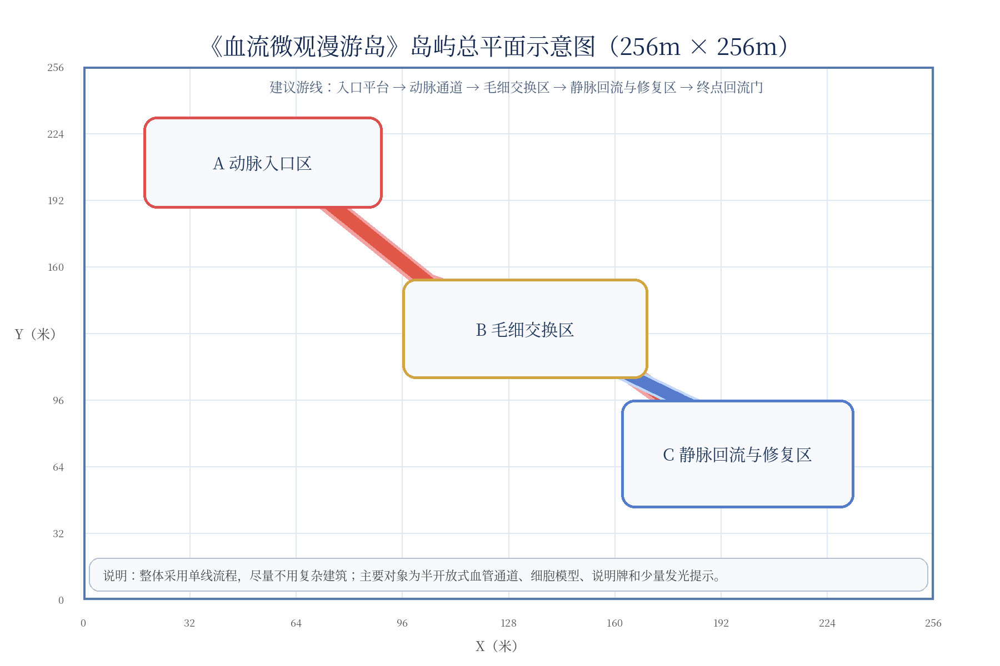
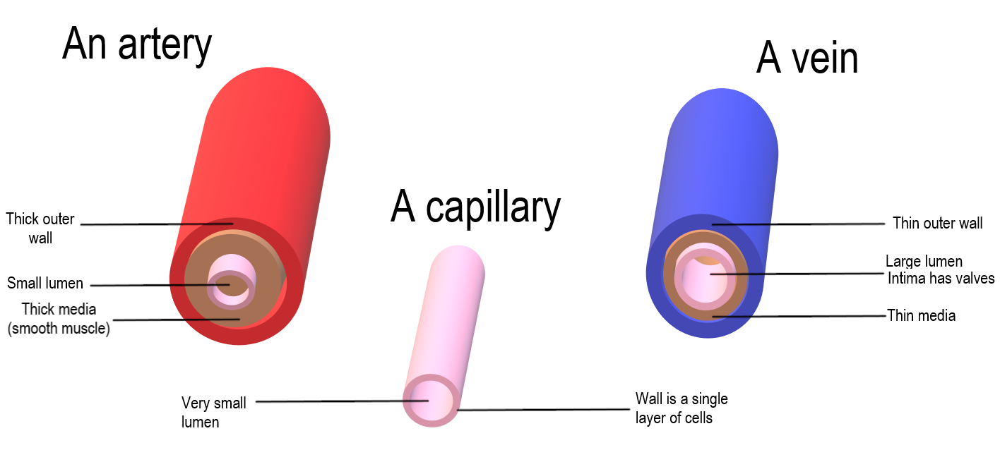
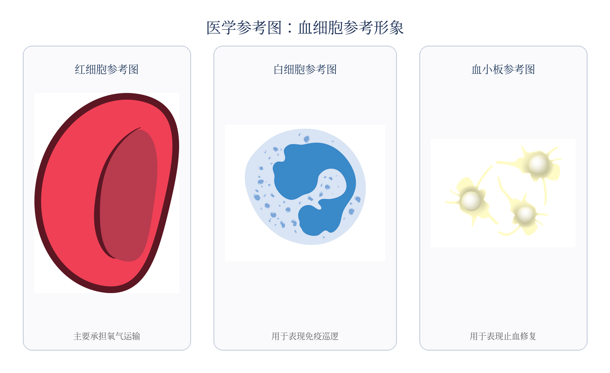

动脉入口区
中心坐标 (54,210)，暖红厚壁通道，突出输送感与红细胞携氧。
Demo Video
这里预留项目演示视频位置。将最终录屏或漫游视频命名为 demo.mp4，放入 assets/ 目录，即可在 GitHub Pages 上直接播放。
assets/demo.mp4，无需修改网页代码；如需使用外链视频，可把这里改成 iframe 嵌入。
Concept
玩家作为观察者进入血管内部，沿血流完成一次面向科普讲解的微观漫游。体验不追求医学显微级复原，而是把动脉输送、毛细交换、静脉回流、免疫巡逻与血小板修复转化为清晰、可讲解、易搭建的空间叙事。
为了控制工作量，整体方案压缩为 3 个核心场景和 2 段过渡通道；不设计复杂建筑群、不依赖大规模脚本，重点用颜色、模型、说明牌和路线节奏表达知识点。
Route & Layout
全岛以西南角为 (0,0)，东北角为 (256,256)。路线从西北侧动脉入口进入，经中部毛细交换区，最终到东南侧静脉回流与修复区。

中心坐标 (54,210)，暖红厚壁通道，突出输送感与红细胞携氧。
中心坐标 (133,130)，使用浅粉/浅金过渡色，展示氧气、营养与代谢废物交换。
中心坐标 (197,70)，蓝紫色回流通道，展示白细胞巡逻与血小板止血修复。
Three Acts
红色厚壁半开放通道，入口平台连接主游线。场景中布置放大的红细胞模型和横截面展示面，说明动脉将血液从心脏带向身体各处。
用主通道加短侧枝模拟毛细分流，避免复杂迷宫。三个停留点对应氧气交换、营养交换和废物回收，是全岛知识核心区。
主色转为蓝紫，表现血液回流。通过白细胞模型表现免疫巡逻，通过受损血管壁与聚集血小板展示止血修复。
Visual References
网页保留了文档中的参考图，方便团队在 GitHub 页面中直接查看核心视觉依据：动脉、毛细血管、静脉横截面对比，以及红细胞、白细胞、血小板参考形象。


Build Strategy
页面把课程文档中的搭建策略整理为可执行清单，便于直接写入 GitHub 项目说明或开发日志。
直线段建议 12–16m 一段，弯段单独制作，便于复制、拼接与修改。
采用半开放或剖面式血管，避免封闭洞穴顶镜头；通道保持足够视野。
用暗红、灰红组织底面和低雾遮盖默认地形，避免保留原始草地或空白土面。
基础版只需可走通、可看清、可说明；触碰提示、粒子和语音可作为增强项。
GitHub Pages Ready
将本文件夹上传到 GitHub 仓库根目录，开启 Pages 后即可发布。演示视频放到 assets/demo.mp4，刷新网页即可显示。
index.html、styles.css 和 assets/